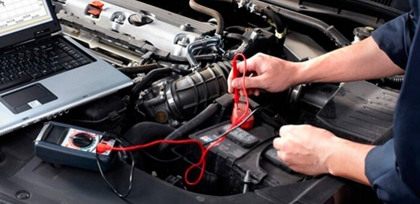

Ремонт электрооборудования
Поломки и возникновение неисправностей электрооборудования встречаются очень часто во многих автомобилях. Оно может выйти из строя даже в дорогом автомобиле, поскольку является хрупкой системой, требующей особого ухода.
Большое количество поломок обуславливается не только качеством сборки машин, но и тем фактором, что в современной машине очень многие системы работают благодаря электронике. И дать сбой может любая из них.
Зачем нужен специалист?
Чтобы правильно провести диагностику поломки и устранить неисправность, необходима работа грамотного специалиста, который понимает особенности электрооборудования.
Причины, по которым машина может выйти из строя, заключаются в следующем:
- окислились клеммы аккумулятора и их необходимо зачистить;
- провода отсоединяются от приборов и их необходимо прикрепить;
- сигналы лямбда-зонда реагируют на топливо низкого качеств.
Провести эти работы качественно может специалист СТО
Профессиональный мастер подготовит машину к дальнейшей эксплуатации в максимально короткий срок.
Ремонтные работы в проводятся только на современном оборудовании. При работе соблюдаются необходимые меры безопасности и общепринятые стандарты качества.
Специалист сначала проведет диагностику и определит причину появления неполадок. Такой подход в работе позволяет провести ремонт в максимально короткий срок. Кроме того, определение причины поломки поможет выявить другие неисправности транспортного средства.
